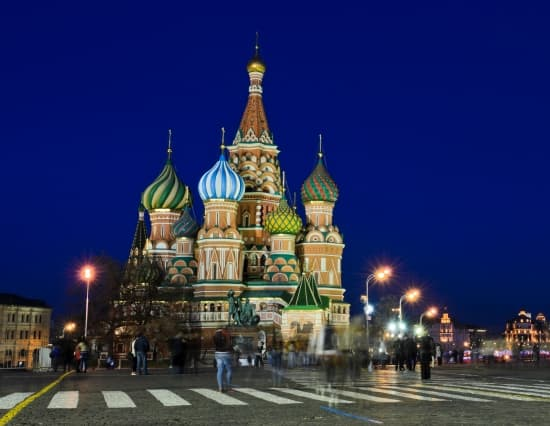
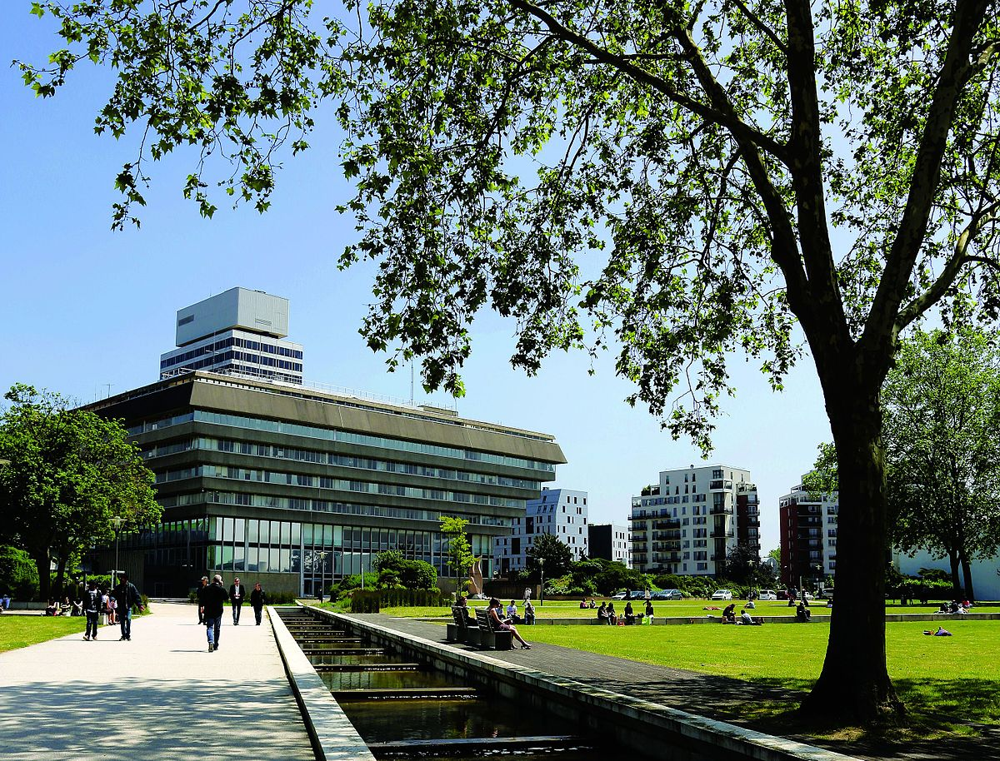
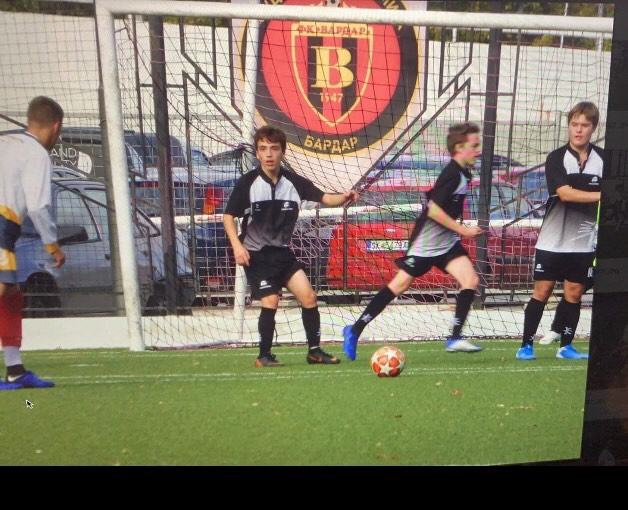

Les Mangas
Je suis d'abord passionné par les Mangas. J'ai toujours été intrigué par les pays asiatiques et j'ai developpé un amour pour ces livres. Mon préféré est One Piece

J'ai aussi grandis avec Pokemon et toujours été fan de cette univers et des cartes de jeu. J'ai d'ailleurs quand j'étais plus jeune developpé une grande collection de carte

Voyager
Comme je l'ai dis en présentation, j'ai vécu dans plusieurs pays. J'ai commencé ma jeunesse en Angleterre où j'ai vécu en plein centre de Londres.

J'ai ensuite vécu quelques années en Russie en plein Moscou. Je jouais d'ailleurs dans une équipe de foot local à ce moment la

J'ai passé mes dernieres années en France et aujourd'hui je vis à Cergy pour mes études

Le sport
J'ai joué au football pendant 8 ans lorsque j'étais en Angleterre et en Russie. J'avais atteint là bas l'équivalent du niveau District. Quand je suis revenu en France, je me suis bléssé en me faisant les ligaments croisés. Dépuis je vais à la salle de sport et je rejoue au football de temps en temps pour le fun.
